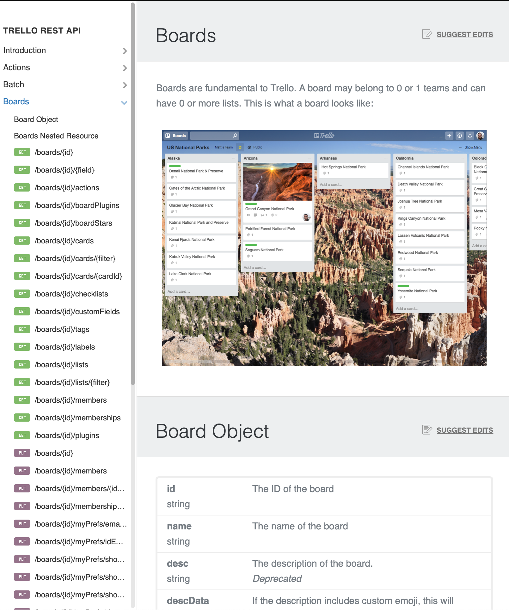
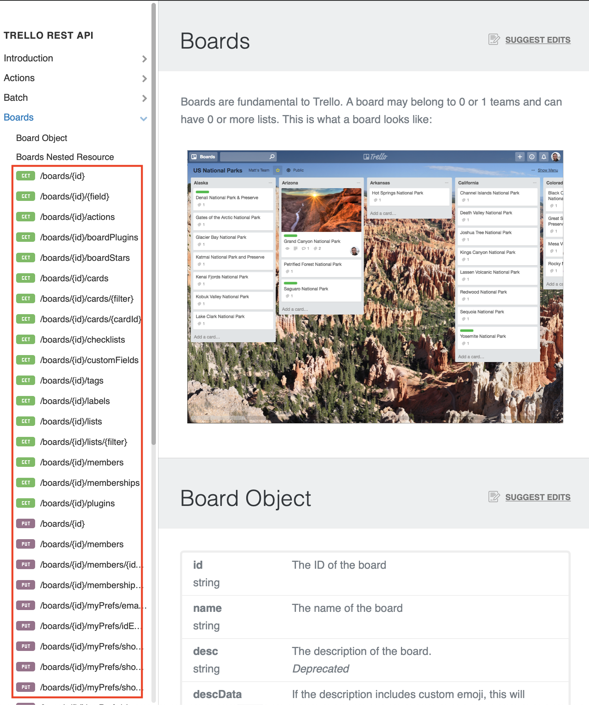
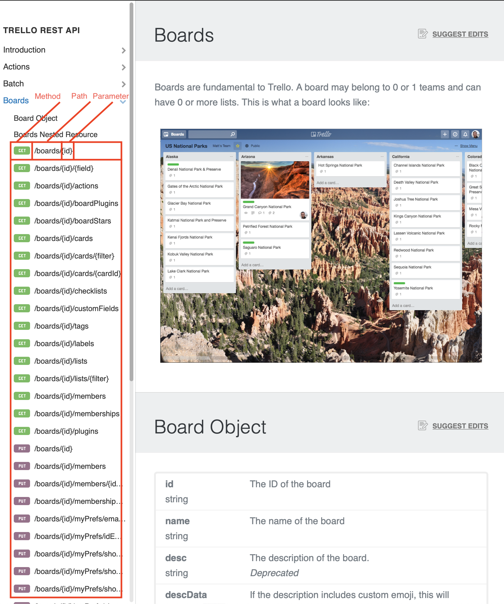

Sean Grove @sgrove
Work on @onegraphio
We, as programmers, we do too much work manually
Manual vs tool-assisted work
What we do : what's quickly achievable
[=========|*] Current: 90%
[==|********] Goal: 20%
Two choices:
Before:
Profiling data is intended exclusively for computers to read.
Computer-understanding of run-time performance
⨥ Computer-generated code
JIT compilers!
misery (ˈmɪz(ə)ri) [noun]
Building a computer-program on top of a human-readable form
See:
Nearly everything should be done by computers underneath.
If too much invested in human-readable form, painful
Going computer-readable->human-readable
is better than
Going human-readable->computer-readable
Goal: Write autocomplete for an API
Scenario 1: From beautiful human-oriented docs 
Scenario 1: From beautiful human-oriented docs 
Scenario 1: From beautiful human-oriented docs 
Result
{"actions":
[{"name": "GET board",
"method": "GET",
"params":
[{"name": "id",
"type": "string"}]}
...]}
Scenario 2: From JSON description of API
Scenario 2: From JSON description of API
{"actions":
[{"name": "GET board",
"method": "GET",
"params":
[{"name": "id",
"type": "string"}]}
...]}
… the same thing!
… and you can generate those nice docs!
Nearly all of these are bespoke, manual today
[computer program] <===> [computer program]
Not humans!
Computer communicating data or effects to/from another system
As a client: What pagination strategies do we see?
Any others?
So few patterns yet no universal `hasMore` or `getNextSet` function.
Why?
Every endpoint is human-oriented, unable to describe itself to its clients
As a client:
Exponential backoff across production program requires centralized app-wide queuing to correctly balance
As a provider: Who's hitting what fields?
If you remove/break a field, which client authors do you tell to migrate?
If you find an existing bug in a field, how do you know who to warn to review their data?
How do you help them automate the migration as much as possible?
As a provider:
As a client: Discoverability:What functionality is available to me?
Given I'm at point X in my integration, what's the best path to destination Z?
As a client: How can I generate fake data from your API?
e.g. Ruby+GitHub, Node+GitHub, Ruby+Zendesk
… they should be generated!
Generated tooling output vs production, consumer-facing output
Demo Zeit purchase domain on OneGraph vs production site
Purchasing demo in via Zeit in OneGraphiQL is amazing as a exploration + developer tool!
It would be (possible, but) terrible to deliver to a non-developer
Be wise.
✓ Mocking
✓ Documentation
✓ Discoverability
✓ Composable ideas (in unexpected ways)
When writing docs, start with data!
Stop doing manual, bespoke work But computers have to be able to read your APIs.
How much work
Challenges:
The paths:
Don’t focus on your top-notch api docs website, focus on more robust self-describing api for other projects
REPLs
-> About seeing the transformation of data at each step
Good documentation sites (README.io) API/data-format migrations Monitoring sites Pagination Client-side handling rate-limits Mocking